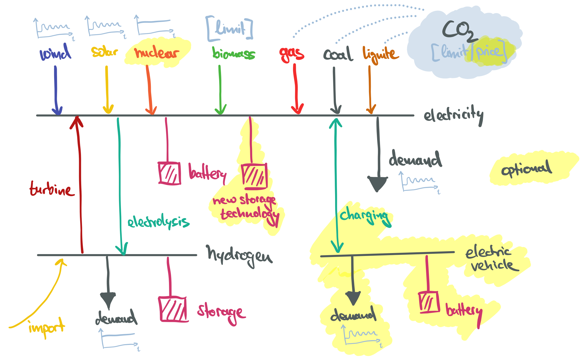

Models without Networks#
This section builds a simple country-scale energy system model without any networks (“copperplate”) to explore the role of different generation, conversion, storage and flexibility technologies, as well as the impact of different policy constraints, such as carbon budgets, carbon pricing, and/or renewable capacity targets.

Model Foundation#
import pandas as pd
import pypsa
RESOLUTION = 3 # hours
SOLVER = "gurobi" # or 'gurobi'
CO2_PRICE = 0
Cost Assumptions#
We take techno-economic assumptions from the technology-data repository which collects assumptions on costs and efficiencies:
YEAR = 2030
url = f"https://raw.githubusercontent.com/PyPSA/technology-data/master/outputs/costs_{YEAR}.csv"
costs = pd.read_csv(url, index_col=[0, 1])
costs.loc[costs.unit.str.contains("/kW"), "value"] *= 1e3
costs = costs.value.unstack().fillna({"discount rate": 0.07, "lifetime": 20, "FOM": 0})
costs.loc[["OCGT", "CCGT"], "CO2 intensity"] = costs.at["gas", "CO2 intensity"]
costs.loc[["OCGT", "CCGT"], "fuel"] = costs.at["gas", "fuel"]
We calculate the capital costs (i.e. annualised investment costs, €/MW/a or €/MWh/a for storage), using the discount rate and lifetime.
def annuity(r, n):
return r / (1.0 - 1.0 / (1.0 + r) ** n)
a = costs.apply(lambda x: annuity(x["discount rate"], x["lifetime"]), axis=1)
costs["capital_cost"] = (a + costs["FOM"] / 100) * costs["investment"]
Time Series#
The wind and solar capacity factor time series have been retrieved from model.energy. Go there to find more time series for other countries and plug them in here.
url = "https://model.energy/data/time-series-dd07c6bb61a102ba3399f062230a24fc.csv"
ts = pd.read_csv(url, index_col=0, parse_dates=True)
ts.head(3)
| onwind | solar | |
|---|---|---|
| 2013-01-01 00:00:00 | 0.848 | 0.0 |
| 2013-01-01 01:00:00 | 0.846 | 0.0 |
| 2013-01-01 02:00:00 | 0.831 | 0.0 |
The demand time series are exported from the ENTSO-E Transparency Platform.
url = "https://tubcloud.tu-berlin.de/s/5ZcfnfC7mEwEGWt/download/electricity-demand.csv"
demand = pd.read_csv(url, index_col=0, parse_dates=True)["DE"]
demand.head(3)
2013-01-01 00:00:00 38617.5824
2013-01-01 01:00:00 37058.2418
2013-01-01 02:00:00 35576.9231
Name: DE, dtype: float64
Model Initialisation#
Add buses, carriers with their associated emissions and set snapshots.
n = pypsa.Network()
n.add("Bus", "electricity")
n.set_snapshots(ts.index)
carriers = {
"wind": "dodgerblue",
"solar": "gold",
"AC": "navy",
"electricity demand": "navy",
"electrified heating": "steelblue",
"oil": "black",
"coal": "darkgray",
"lignite": "sienna",
"OCGT": "indianred",
"CCGT": "firebrick",
"biomass": "olivedrab",
"nuclear": "orange",
"battery storage 1h": "lightgreen",
"battery storage 3h": "lightgreen",
"battery storage 6h": "lightgreen",
"hydrogen turbine": "blueviolet",
"hydrogen import": "lavenderblush",
"electrolysis": "orchid",
"hydrogen storage": "hotpink",
"hydrogen": "hotpink",
"EV": "cadetblue",
"EV demand": "cadetblue",
"EV charger": "limegreen",
"V2G": "limegreen",
"EV battery": "teal",
}
emissions = {
"wind": 0,
"solar": 0,
"AC": 0,
"electricity demand": 0,
"electrified heating": 0,
"oil": 0.257,
"coal": 0.336,
"lignite": 0.407,
"OCGT": 0.198,
"CCGT": 0.198,
"biomass": 0,
"nuclear": 0,
"battery storage 1h": 0,
"battery storage 3h": 0,
"battery storage 6h": 0,
"hydrogen import": 0,
"hydrogen turbine": 0,
"electrolysis": 0,
"hydrogen storage": 0,
"hydrogen": 0,
"EV": 0,
"EV demand": 0,
"EV charger": 0,
"V2G": 0,
"EV battery": 0,
}
n.add("Carrier", carriers.keys(), color=carriers.values(), co2_emissions=emissions);
Demand#
We add an electricity demand time series with a total annual demand of around 500 TWh/a for Germany.
n.add(
"Load",
"electricity demand",
bus="electricity",
p_set=demand,
carrier="electricity",
);
Fossil Power Plants#
Here, we add fossil power plants with their respective investment costs, marginal costs, efficiencies, and CO2 emissions.
for fossil in ["coal", "lignite", "OCGT", "CCGT", "oil"]:
marginal_cost = (
costs.at[fossil, "fuel"] / costs.at[fossil, "efficiency"]
+ costs.at[fossil, "VOM"]
+ CO2_PRICE * costs.at[fossil, "CO2 intensity"] / costs.at[fossil, "efficiency"]
)
n.add(
"Generator",
fossil,
bus="electricity",
p_nom_extendable=True,
efficiency=costs.at[fossil, "efficiency"],
marginal_cost=marginal_cost,
capital_cost=costs.at[fossil, "capital_cost"],
carrier=fossil,
);
Nuclear Power Plant#
Here, we set p_min_pu=1 to force the plant to always run at full capacity. This is a simplification, as in reality nuclear plants can be ramped down, but not very flexibly.
marginal_cost = (
costs.at["nuclear", "fuel"] / costs.at["nuclear", "efficiency"]
+ costs.at["nuclear", "VOM"]
)
n.add(
"Generator",
"nuclear",
bus="electricity",
p_nom_extendable=True,
efficiency=costs.at["nuclear", "efficiency"],
marginal_cost=marginal_cost,
capital_cost=costs.at["nuclear", "capital_cost"],
carrier="nuclear",
p_min_pu=1, # forced baseload operation
);
Biomass Power Plant#
Here, we limit the total energy output of the biomass plant by setting e_sum_max to represent a limited sustainable biomass potential, e.g. 50 TWh/a.
marginal_cost = costs.at["biomass", "fuel"] / costs.at["biomass", "efficiency"]
n.add(
"Generator",
"biomass",
bus="electricity",
p_nom_extendable=True,
efficiency=costs.at["biomass", "efficiency"],
marginal_cost=marginal_cost,
capital_cost=costs.at["biomass", "capital_cost"],
carrier="biomass",
e_sum_max=50e6, # limit
);
Wind and Solar#
Here, we set p_max_pu to the time series of the renewable capacity factors.
n.add(
"Generator",
"wind",
bus="electricity",
carrier="wind",
p_max_pu=ts.onwind,
capital_cost=costs.at["onwind", "capital_cost"],
p_nom_extendable=True,
)
n.add(
"Generator",
"solar",
bus="electricity",
carrier="solar",
p_max_pu=ts.solar,
capital_cost=costs.at["solar", "capital_cost"],
p_nom_extendable=True,
);
Batteries#
Here, we add batteries with energy-to-power ratios of 1, 3, and 6 hours.
for max_hours in [1, 3, 6]:
n.add(
"StorageUnit",
f"battery storage {max_hours}h",
bus="electricity",
carrier=f"battery storage {max_hours}h",
max_hours=max_hours,
capital_cost=costs.at["battery inverter", "capital_cost"]
+ max_hours * costs.at["battery storage", "capital_cost"],
efficiency_store=costs.at["battery inverter", "efficiency"],
efficiency_dispatch=costs.at["battery inverter", "efficiency"],
p_nom_extendable=True,
cyclic_state_of_charge=True,
)
Hydrogen#
Here, we add a hydrogen storage system with electrolysers, underground storage, and a hydrogen turbine. Additionally, there is a constant hydrogen demand in the order of 50% of the average electricity demand. There is also the option to import hydrogen at high cost.
n.add("Bus", "hydrogen", carrier="hydrogen")
n.add(
"Load",
"hydrogen demand",
bus="hydrogen",
p_set=demand.mean() / 2,
carrier="hydrogen",
)
n.add(
"Link",
"electrolysis",
bus0="electricity",
bus1="hydrogen",
carrier="electrolysis",
p_nom_extendable=True,
efficiency=costs.at["electrolysis", "efficiency"],
capital_cost=costs.at["electrolysis", "capital_cost"],
)
n.add(
"Link",
"hydrogen turbine",
bus0="hydrogen",
bus1="electricity",
carrier="hydrogen turbine",
p_nom_extendable=True,
efficiency=costs.at["OCGT", "efficiency"],
capital_cost=costs.at["OCGT", "capital_cost"] / costs.at["OCGT", "efficiency"],
)
tech = "hydrogen storage tank type 1 including compressor"
tech = "hydrogen storage underground"
n.add(
"Store",
"hydrogen storage",
bus="hydrogen",
carrier="hydrogen storage",
capital_cost=costs.at[tech, "capital_cost"],
e_nom_extendable=True,
e_cyclic=True,
);
n.add(
"Generator",
"hydrogen import",
bus="hydrogen",
p_nom=10_000, # large value
marginal_cost=200,
carrier="hydrogen import",
);
Electric Vehicles#
Here, we add electric vehicles (EV) as previously shown in the sector-coupling tutorial. Electric vehicles have an availability profile for when they are connected to the grid, and a requirement profile for the minimum state of charge they should have at certain times of the day (e.g. 75% at 6 AM). Fractions of the total fleet participate in smart charging and vehicle-to-grid (V2G). The charging power and battery sizes are based on a total of 40 million EVs with 50 kWh batteries and a maximum charging power of 11 kW.
number_cars = 40e6 # number of EV cars
bev_charger_rate = 0.011 # 3-phase EV charger with 11 kW
p_nom = number_cars * bev_charger_rate
bev_energy = 0.05 # average battery size of EV in MWh
bev_dsm_participants = 0.5 # share of cars that do smart charging
e_nom = number_cars * bev_energy * bev_dsm_participants
url = "https://tubcloud.tu-berlin.de/s/9r5bMSbzzQiqG7H/download/electric-vehicle-profile-example.csv"
p_set = pd.read_csv(url, index_col=0, parse_dates=True).squeeze()
p_set = p_set.resample("1h").mean().interpolate()
p_set.index = p_set.index.shift(-(2 * 365), freq="D")
p_set = p_set.reindex(n.snapshots).ffill()
url = "https://tubcloud.tu-berlin.de/s/E3PBWPfYaWwCq7a/download/electric-vehicle-availability-example.csv"
available = pd.read_csv(url, index_col=0, parse_dates=True).squeeze()
available = available.resample("1h").mean().interpolate()
available.index = available.index.shift(-(2 * 365), freq="D")
available = available.reindex(n.snapshots).ffill()
n.add("Bus", "EV", carrier="EV")
n.add("Load", "EV demand", bus="EV", carrier="EV demand", p_set=p_set)
n.add(
"Link",
"EV charger",
bus0="electricity",
bus1="EV",
p_nom=p_nom,
carrier="EV charger",
p_max_pu=available,
efficiency=0.9,
)
n.add(
"Link",
"V2G",
bus0="EV",
bus1="electricity",
p_nom=p_nom,
carrier="V2G",
p_max_pu=available,
efficiency=0.9,
)
requirement = pd.Series(0., index=n.snapshots)
requirement.where(requirement.index.hour != 6, 0.75, inplace=True)
n.add(
"Store",
"EV battery",
bus="EV",
carrier="EV battery",
e_cyclic=True, # state of charge at beginning = state of charge at the end
e_nom=e_nom,
e_min_pu=requirement,
);
Emission Limit#
Here, we could set a CO2 emission limit for the whole system, e.g. 100 MtCO2/a.
# n.add(
# "GlobalConstraint",
# "emission_limit",
# carrier_attribute="co2_emissions",
# sense="<=",
# constant=0,
# );
Electrified Heating#
Here, we could add an additional load representing electricity demand from electrified heating (e.g. heat pumps) with a seasonal profile.
# url = "https://tubcloud.tu-berlin.de/s/8KWqTAHEM9m8dFj/download/heat-demand.csv"
# p_set = pd.read_csv(url, index_col=0, parse_dates=True).squeeze()
# p_set = p_set / p_set.max() * demand.mean() / 2
# n.add(
# "Load",
# "electrified heating",
# bus="electricity",
# p_set=p_set,
# carrier="electrified heating",
# );
Temporal Clustering#
To save some computation time, we only sample every third snapshot, which corresponds to a temporal resolution of 3 hours. Note that the snapshot weightings (the duration each time step represents) have to be adjusted accordingly.
n.set_snapshots(n.snapshots[::RESOLUTION])
n.snapshot_weightings.loc[:, :] = RESOLUTION
Exploration#
We could now already run the optimisation and look at a first set of results.
n.optimize(
solver_name=SOLVER,
log_to_console=False,
)
WARNING:pypsa.consistency:The following loads have carriers which are not defined:
Index(['electricity demand'], dtype='object', name='Load')
INFO:linopy.model: Solve problem using Gurobi solver
---------------------------------------------------------------------------
AssertionError Traceback (most recent call last)
Cell In[18], line 1
----> 1 n.optimize(
2 solver_name=SOLVER,
3 log_to_console=False,
4 )
File /opt/hostedtoolcache/Python/3.13.7/x64/lib/python3.13/site-packages/pypsa/optimization/optimize.py:383, in OptimizationAccessor.__call__(self, snapshots, multi_investment_periods, transmission_losses, linearized_unit_commitment, model_kwargs, extra_functionality, assign_all_duals, solver_name, solver_options, compute_infeasibilities, **kwargs)
381 if extra_functionality:
382 extra_functionality(self._n, sns)
--> 383 status, condition = m.solve(solver_name=solver_name, **solver_options, **kwargs)
385 if status == "ok":
386 self._n.optimize.assign_solution()
File /opt/hostedtoolcache/Python/3.13.7/x64/lib/python3.13/site-packages/linopy/model.py:1176, in Model.solve(self, solver_name, io_api, explicit_coordinate_names, problem_fn, solution_fn, log_fn, basis_fn, warmstart_fn, keep_files, env, sanitize_zeros, sanitize_infinities, slice_size, remote, progress, **solver_options)
1173 solver_name = available_solvers[0]
1175 logger.info(f" Solve problem using {solver_name.title()} solver")
-> 1176 assert solver_name in available_solvers, f"Solver {solver_name} not installed"
1178 # reset result
1179 self.reset_solution()
AssertionError: Solver gurobi not installed
But the exploration is left to you! Here are some ideas for sensitivities to explore and metrics to look at:
Metrics:
Total annual system costs and breakdown by technology (billion €/a and % of total cost). This can be built from
n.statistics.opex()andn.statistics.capex().Installed capacities of the different technologies (fossil power plants, wind, solar, battery, electrolysis, etc.). This can be accessed from
n.statistics.optimal_capacity().Energy mix and balances of different carrier as time series. This can be accessed from
n.statistics.energy_balance(groupby=["bus", "carrier"])and plotted intereactively withn.statistics.energy_balance.iplot.area(bus_carrier="AC").Electricity prices (average and duration curve). These can be accessed under
n.buses_t.marginal_price.Level of CO2 emissions. This can be calculated using
n.generators_t.p / n.generators.efficiency * n.generators.carrier.map(n.carriers.co2_emissions).Storage filling levels per technology over time. This can be accessed from
n.stores_t.e.
Sensitivities:
Choose a different country for demand and renewables time series. This can be done by exchanging the data inputs at the top.
Vary the cost assumptions by changing the overall projection year (e.g. 2030, 2040, 2050). This can be done when loading the cost data.
Successively increase/decrease the investment cost of nuclear power. This can be done by modifying
n.generators.loc["nuclear", "capital_cost"].Limit the flexibility of nuclear power plants, e.g. by requiring a minimum part load of 90%. This can be done by setting
n.generators.loc["nuclear", "p_min_pu"] = 0.9. You can also set ramp limits for other fossil generators (ramp_limit_upandramp_limit_down).Vary the cost of individual technologies along their learning curves (solar, battery, electrolysis, hydrogen storage, etc.). This can be done by changing their
capital_costattribute and/or theirefficiencyattribute.Add a new storage technology with cost, efficiency and loss parameters. This can be done with
n.add("StorageUnit", ...). Look how it’s done for batteries.Successively increase the CO2 price and observe the emissions. This can be done by modifying the marginal cost of emitting generators,
n.generators.loc["hard coal", "marginal_cost"].Successively constrain the CO2 emission limit. This can be done by modifying the constant in
n.global_constraints. The endogenous CO2 price can be found undern.global_constraints.mu(negative).Enforce renewable capacity targets for wind and/or solar. This can be done by setting the
p_nom_minattribute of the respective generators, e.g.n.generators.loc["wind", "p_nom"] = 100e3for 100 GW.Vary the gas price. This can be done by modifying the marginal cost of gas generators,
n.generators.loc["OCGT", "marginal_cost"]andn.generators.loc["CCGT", "marginal_cost"].Constrain the availability of sustainable biomass. This can be done by setting the
e_sum_maxattribute of the biomass generatorn.generators.loc["biomass", "e_sum_max"].Add upstream emissions for the biomass (so that it is not fully carbon-neutral). You can set this in
n.carriers.loc["biomass", "co2_emissions"].Allow the import of green hydrogen at a given price, e.g. 100 €/MWh. You can also set a volume limit be setting
e_sum_max(as for the biomass generator).Vary the hydrogen demand relative to the electricity demand. This can be done by modifying
n.loads.loc["hydrogen demand", "p_set"].Add electricity demand from the electrification of heating with strong seasonal demand variation. This can be done with the commented-out code cell above.
Vary the charging power of the electric vehicles.
Vary the battery size of the electric vehicles.
Vary the total number of electric vehicles.
Vary the electric vehicle state-of-charge requirements for the mornings.
Vary the share of electric vehicles participating in smart charging and vehicle-to-grid.
Run the optimisation for different weather years. You can retrieve 44 years of wind and solar capacity factor time series for European countries from renewables.ninja.
Feel free to explore other ideas as well!